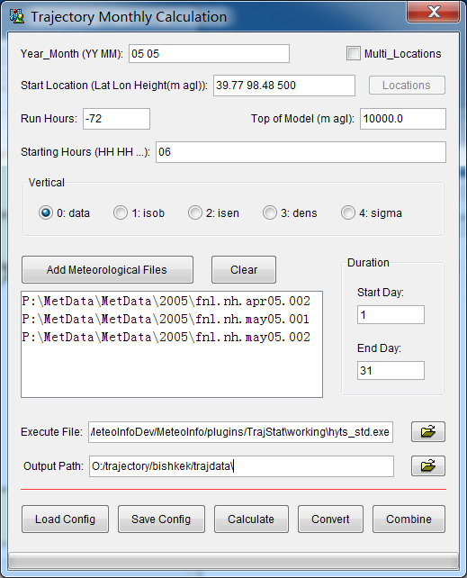

Trajectory Calculation¶
‘Trajectory Monthly Calculation’ dialog will be opened when clicking ‘Calculate’ menu item. From the dialog station name, starting time and location, run time, top of model, vertical, meteorological files, start day, end day and output path could be set. The setting is similar with TCL interface of HYSPLIT model. Then click ‘Calculate’ button, the trajectories will be calculated automatically. The ‘hymodelt.exe’ file come from HYSPLIT (http://www.arl.noaa.gov/ready/hysplit4.html) was used in calculation. The file names were set automatically to ‘yymmddhh’, such as ‘07120106’. Then click ‘Convert’ button, every trajectory file will be rewrite to the format with column titles as fist row and comma-delimited data. The extension names of the files were changed to ‘.tgs’. Finally click ‘Combine’ button, the ‘.tgs’ files will be combined to one file. In this example, we calculate trajectories of springtime (March to May) in 2004-2006.
